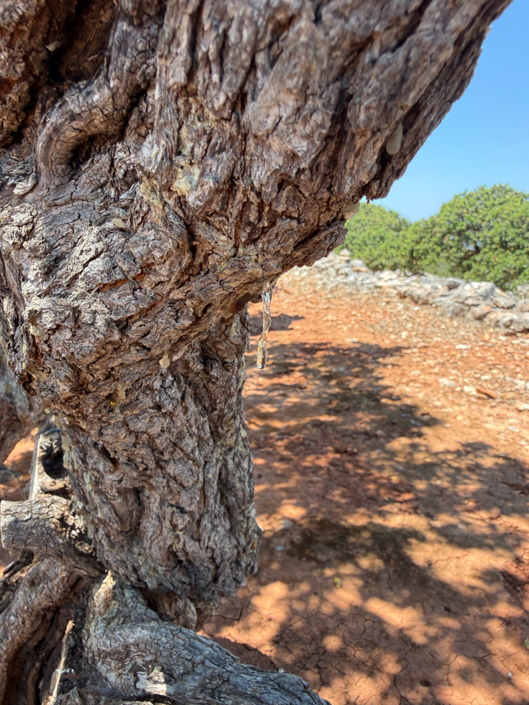
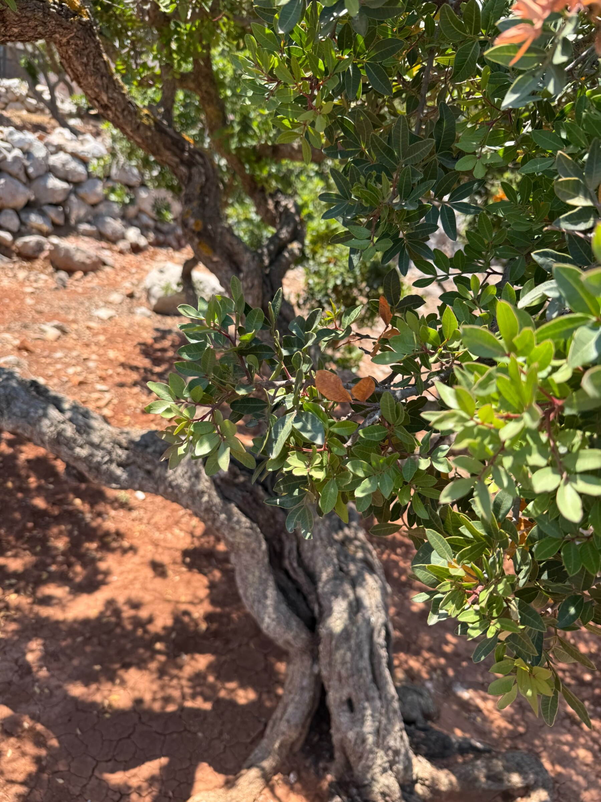
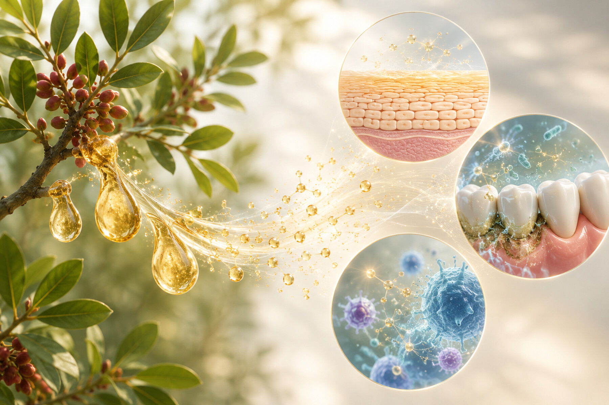

皮膚炎とかゆみ Dermatitis and itch
アレルギー性皮膚炎モデルでは、マスティック外用により皮膚の腫れ、ADスコア、TEWL、かゆみ行動、炎症性サイトカイン産生が低下しました。 In allergic dermatitis models, topical mastic reduced swelling, AD score, TEWL, scratching behavior, and inflammatory cytokine production. [1]

天然樹脂から伴侶動物のケアへ From natural resin to companion-animal care
マスティック樹脂の抗菌・抗炎症作用を、犬猫の皮膚疾患と歯周病ケアへつなげる研究を進めています。 We study the antibacterial and anti-inflammatory actions of mastic resin for future skin and oral-care strategies in dogs and cats.
About mastic About mastic
マスティックは、Pistacia lentiscus から得られる天然の芳香樹脂です。古くから口腔ケアなどに用いられてきましたが、私たちは「抽出物」だけでなく樹脂そのものに着目し、炎症、細菌、バリア機能に対する作用を実験的に検証しています。 Mastic is a natural aromatic resin obtained from Pistacia lentiscus. Rather than focusing only on extracts, our work examines whole mastic resin and its effects on inflammation, bacteria, and barrier-related responses.


Research focus Research focus
薬剤耐性菌の広がりにより、犬の膿皮症や犬猫の歯周病では日常的な予防・補助ケアの重要性が高まっています。研究室では、マスティックの直接的な抗菌作用と、宿主側の炎症反応を抑える作用の両面を評価しています。 As antimicrobial resistance narrows treatment choices, everyday preventive and supportive care is becoming increasingly important for canine pyoderma and periodontal disease in dogs and cats. We evaluate both direct antibacterial action and host-side anti-inflammatory responses.
アレルギー性皮膚炎モデルでは、マスティック外用により皮膚の腫れ、ADスコア、TEWL、かゆみ行動、炎症性サイトカイン産生が低下しました。 In allergic dermatitis models, topical mastic reduced swelling, AD score, TEWL, scratching behavior, and inflammatory cytokine production. [1]
MRSP と Staphylococcus aureus に対して、マスティックは増殖活性や菌数を抑え、ケラチノサイトで誘導される細胞傷害性と炎症性応答も抑制しました。 Against MRSP and Staphylococcus aureus, mastic reduced growth activity and bacterial burden, while suppressing Staphylococcus-induced cytotoxicity and inflammatory responses in keratinocytes. [2]
P. gulae に対する抗菌作用、硫化水素・メチルメルカプタン産生の低下、犬猫での口臭・歯肉炎指標の改善が報告されています。 Mastic inhibited P. gulae, reduced hydrogen sulfide and methyl mercaptan generation, and improved halitosis and gingivitis indices in dogs and cats. [3]
What we found What we found
マスティック研究の特徴は、細菌に直接作用するかどうかだけでなく、皮膚や口腔の細胞が起こす炎症応答まで含めて評価している点です。皮膚炎、細菌性皮膚疾患、歯周病の各モデルで、補助的・予防的なケアにつながる可能性を検証しています。 A key feature of this research is that it assesses not only direct effects on bacteria, but also the inflammatory responses of skin and oral-related cells. Across dermatitis, bacterial skin disease, and periodontal disease models, we are examining mastic as a possible adjunctive or preventive care approach. [1] [2] [3]
Study stream Study stream
マウス皮膚炎モデルとケラチノサイトを用いて、外用マスティックの抗炎症・抗そう痒作用を確認。 Mouse dermatitis models and keratinocyte assays showed anti-inflammatory and anti-pruritic responses after topical mastic treatment. [1]
MRSP 由来の膿皮症モデルでは予防的処理で病変形成が抑えられ、1%処理では治療的効果も一部確認されました。Staphylococcus aureus では効果が限定的な項目もあり、今後の製剤化・投与経路の検討が必要です。 In an MRSP-induced pyoderma model, pretreatment suppressed lesion development, and 1% treatment showed partial therapeutic benefit. Some effects were limited for Staphylococcus aureus, indicating the need to optimize formulation and delivery. [2]
犬猫の P. gulae 陽性歯周病では、5%マスティックゲルの日常塗布により口臭関連ガス、歯肉炎、P. gulae 活性の低下が報告されました。 In dogs and cats with P. gulae-positive periodontal disease, daily 5% mastic gel reduced halitosis-related gases, gingivitis, and P. gulae activity. [3]
本ページは添付論文に基づく研究紹介です。マスティックは抗生物質や標準治療の代替と断定するものではなく、補助的・予防的な可能性を検証している段階の研究として紹介しています。 This page summarizes the attached papers. Mastic is presented as a candidate adjunctive or preventive approach under investigation, not as a replacement for antibiotics or standard veterinary care.
References References